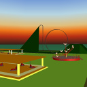

Virtuální realita - úlohy
Úloha è. 3 - Dynamickı svìt
Zadání
Pøetvoøte statické modely do podoby funkèních, pohyblivıch a ozvuèenıch modelù:
- Od této chvíle zpracovávejte pouze variantu modelu s LOD.
- Reakce na pøítomnost avatara (ProximitySensor) zpùsobí rozsvícení svìtla nad modelem, jeho� barva bude nastavitelná ze záhlaví prototypu. Ka�dı model nech� je osvìtlen jinou barvou. Pøi odchodu avatara svìtlo zhasne. Senzor definujte uvnitø prototypu. Stanovištì ve scénì aktualizujte tak, aby byla umístìna na okraji citlivé oblasti senzoru.
- S pomocí manipulátoru bude mo�no zmìnit polohu èi tvar nìkteré èásti modelu èi celého modelu.
- Kliknutím na další vybranou èást modelu (TouchSensor.touchTime) zahajte animaci pohybu této èásti a animaci barev.
- Ka�dou animace doprovázejte vhodnım zvukem. Celkovı souèet všech zvukovıch souborù tımu však nesmí bıt vìtší ne� 1MB.
- K úloze vytvoøte v adresáøi /3 pøíslušné stránky. Pøidejte k nim informace o dynamickıch vlastnostech (uveïte blokové schéma dynamickıch akcí, tj. pøedávání událostí).
- Porovnejte, zda pøidání dynamiky (uloha 3) zmìnilo fps ve srovnání se stejnım, avšak statickım modelem (úloha 2). Uva�ujte pouze varianty s LOD. Vısledky mìøení opìt zveøejnìte.
Vypracování

Autoøi
Tım è. 1: Martin Galajda, Ivan Jankoviè, Bohumír Zameèník.
Hlavní stránka tımu.
{kind=link}